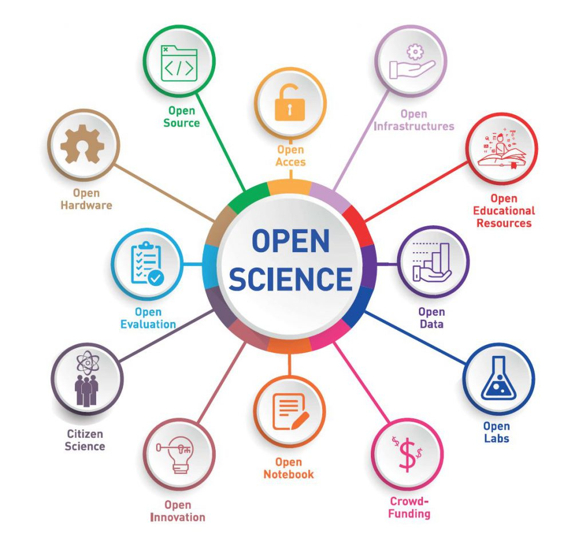
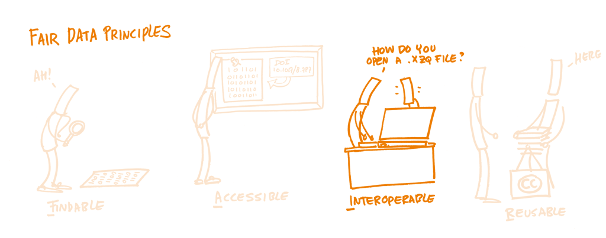

1. Introduction to RDM
⏰ Time Estimation: X minutes
💬 Learning Objectives:
- Fundamentals of Research Data Management
- Effective Research Data Management Guidelines
- Data Lifecycle Management and phases
- FAIR principles and Open Science
FAIR Research Data Management and the Data Lifecycle
Research Data Management (RDM) can be defined as a “collective term for the planning, collection, storage, sharing, and preservation of research data” (University of Copenhagen RDM Team 2022). While the meaning of Research Data Management might be obvious, it is a good idea to break down its components to make a good sense of what it implies.
Proper RDM practices are crucial in modern scientific research due to the exponential growth of data across various disciplines, such as genomics, climate research, and social sciences. By adopting robust RDM practices, researchers can optimize their workflows, increase research impact, and contribute to scientific progress. Let’s explore RDM in more detail and its advantages.
Guidelines and benefits of effective RDM
RDM ensures ethical and legal compliance with research requirements. Effective RDM can significantly benefit research and provide advantages for individual researchers:
- Detailed data management planning helps in identifying and addressing potential uses, alining expectations among collaborators, and clarifying data rights and ownership
- Transparent and Structured Data Management enhances the reliability and credibility of research findings
- Data documentation and data sharing promotes discoverability and facilitates collaborations. Clear documentation of research also streamlines access to previous work, enhancing efficiency, building upon existing knowledge, maximizing research value, accelerating scientific discoveries, and improving visibility and impact
- Risk assessments and strategies for data storage and security can prevent data loss, breaches, or misuse and safeguard sensitive data
- Long-Term Preservation. Data accessibility well after the project’s completion contributes to data accessibility and continued research relevance
Several surveys have shown that data scientists spend almost half of their time loading and cleaning data, becoming the most consuming, and what many would call tedious, tasks of their jobs (“The State of Data Science 2020 Moving from Hype Toward Maturity” 2020; “Cleaning Big Data: Most Time-Consuming, Least Enjoyable Data Science Task, Survey Says” 2016).
Can you consider why we dedicate such a significant amount of time? Perhaps these images look familiar to you!
 Caption: Top-left: Photo by Wonderlane on Unsplash; Top-right: From Stanford Center for Reproducible Neuroscience; Bottom: Messy folder structure, by J.A.HR
Caption: Top-left: Photo by Wonderlane on Unsplash; Top-right: From Stanford Center for Reproducible Neuroscience; Bottom: Messy folder structure, by J.A.HR
Ineffective data management practices can have significant consequences that affect your future self, colleagues, or collaborators who may have to deal with your data. The implications of poor data management include:
- Difficulty in Data Retrieval: Without proper organization and documentation, finding specific data files or understanding their content becomes challenging and time-consuming, leading to inefficiency.
- Loss of Data: Inadequate backup and storage strategies increase the risk of data loss (hardware failures, accidental deletions…), potentially erasing months or years of work.
- Data Incompleteness and Errors: Insufficient documentation leads to ambiguity and errors in data interpretation undermining research credibility.
- Difficulty in Reproducibility: Poor data management hinders scientific progress by impeding the reproduction of research results.
- Delayed or Compromised Collaboration: disorganized data slows down collaborative research projects, hindering communication.
- Data Security and Privacy Risks: Inadequate security measures measures expose sensitive information to breaches, risking privacy.
- Wasted Time and Resources: Poor management diverts resources from research tasks, increasing labor costs (additional time on data management).
- Financial Implications: Time-consuming data management tasks lead to increased labor costs and potential project delays. Data loss can also have negative implications.
- Reputational Damage: Inaccurate or irreproducible research outcomes harm a researcher’s credibility in the scientific community.
To address these challenges, prioritizing and investing in effective RDM practices like organization, documentation, backup strategies, and data security and preservation protocols, can prevent setbacks, ensure data integrity, and enhance scientific research reliability.
Research Data Cycle
The Research Data Life Cycle is a structured framework depicting the stages of data from its creation or collection to its eventual archiving or disposal. Comprising inception, collection, processing, analysis, sharing, and preservation stages, the cycle parallels a living organism’s growth, demanding tailored management at each phase. Mastering this cycle is vital for researchers to maintain data integrity, accessibility, and long-term (re)usability, as it fosters transparency, reproducibility, and collaboration in scientific research.
The data life cycle is described in 6 phases:
- Plan: definition of the objectives, and data requirements, and develop a data management plan outlining data collection, storage, sharing, and ethical/legal considerations.
- Collect and Document: data is gathered according to the plan, and important details such as source, collection methods, and modifications are documented to ensure quality and facilitate future use.
- Process and Analyse: data is processed and analyzed using various methods and tools to extract meaningful insights. This involves transforming, cleaning, and formatting data for analysis.
- Store and Secure: data is stored securely to prevent loss, unauthorized access, or corruption. Researchers select appropriate storage solutions and implement security measures to protect sensitive information.
- Publish and Share: sharing data openly, following Open Science and FAIR principles, to foster collaboration, increase research visibility, and enable data reuse by others.
- Preserve: Valuable data is preserved in trusted repositories or archives to ensure long-term accessibility and usability for the scientific community.

To delve deeper into this topic, click below and explore each phase of the data life cycle. You will find tips and links to future material.
Phases of the data life cycle in detail
1. Plan
The management of research data must be thoroughly considered before physical materials and digital data are collected, observed, generated, created, or reused. This includes developing and documenting data management plans (DMP) in electronic format.DMPs should be updated when significant changes occur and stored alongside the corresponding research data. It’s essential to discuss DMPs with project collaborators, research managers, and supervisors to establish responsibilities for data management activities during and after research projects.
Check out next lesson to learn more about creating effective DMPs.
2. Collect and Document
Research data collection and processing should be in line with the best practices within the respective research discipline. Research projects should be documented in a way that enables reproducibility by others. This entails providing clear and accurate descriptions of project methodology, software, and code utilized. Additionally, workflows for data preprocessing and file structuring should be outlined.
Research data should be described in metadata to enable effective searching, identification, and interpretation of the data, with metadata linked to the research data for as long as they exist.
3. Process and analyze
During this phase, researchers employ computational methods and bioinformatics tools to extract meaningful information from the data. Good coding practices ensure well-documented and reproducible analyses. For example, code notebooks and version control tools, such as Git, are essential for transparency and sharing results with the scientific community.
To streamline and standardize the data analysis process, researchers often implement workflows and pipelines, automating multiple analysis steps to enhance efficiency and consistency while promoting reproducibility.
4. Store and Secure
Research data must be classified based on sensitivity and the potential impact to the research institution from unauthorized disclosure, alteration, or destruction. Risks to data security and data loss should be assessed accordingly. This includes evaluating:
- Physical and digital access to research data
- Risks associated with data management procedures
- Backup requirements and backup procedures
- External and internal threats to data confidentiality, integrity and accessibility
- Financial, regulatory, and technical consequences of working with data, data storage, and data preservation
This step is very specific to the setup used in your environment so we cannot include it in a comprehensive guideline on this matter.
- Enroll in the next GDPR course offered by the Center for Health Data Science to learn more about data protection and GDPR compliance.
6. Preserve
Arrangements for long-term preservation (data and metadata) must adhere to legislation and agreements. This should include:
- Information on research data: At least the data sets supporting published research must be preserved to address objections or criticisms.
- Preservation duration: Retain data supporting research publications for at least five years post-project or publication.
- Choose preservation format and location: Determine format, location, and associated metadata.
- Delete/destroy data if excluded by legislation or agreements, or if preservation isn’t necessary or possible (for example, when research data can easily be reproduced or is too costly to store or when material quality will deteriorate over time).
- Assign responsibility: Appoint individuals or roles to safeguard data integrity post-project.
- Determine access rights: Establish rights for accessing and using preserved data sets.
Check with your institution their requirements for data preservation, such as keeping copies accessible to research managers and peers at the institution’s premises.
We will check about which repositories you can use to preserve your NGS data in the lesson 7
To guarantee effective RDM, researchers should follow the FAIR principles.
FAIR and Open Science
Open Science and FAIR principles have become essential frameworks for promoting transparency, accessibility, and reusability in scientific research. While Open Science advocates for unrestricted access to research outputs, data, and methodologies, FAIR principles emphasize making data Findable, Accessible, Interoperable, and Reusable. Together, they foster collaboration, transcend disciplinary boundaries, and support long-term data preservation. However, they were not directly relevant to software until recently. Governments and funding agencies worldwide increasingly recognize their value and are actively promoting their adoption in academia. In this section, you will learn how to apply these principles to your research.
Open Science
Open Science facilitates wider accessibility of research outputs, fosters collaboration, and promotes transparency and reproducibility, thus enhancing responsible research conduct. Economically, promoting Open Access and data sharing maximizes the return on research investments and fuels innovation and entrepreneurship. This approach enables businesses and startups to leverage research findings, while researchers can integrate large datasets for new discoveries.

- Increased Visibility and Impact: more people can access and engage with your findings.
- Facilitated Collaboration: leading to the development of innovative ideas and impactful projects.
- Enhanced Credibility: sharing data and methods openly allows for validation of research findings by others.
- Accelerated Research Progress:: by enabling researchers to build upon each other’s work and leverage shared data.
- Stimulation of New Research: shared data can inspire novel research questions and discoveries.
- Attract Funding Opportunities: adhering to Open Science principles may make you eligible for additional funding opportunities.
- Transparency and Accountability: promoting responsible conduct in research.
- PLong-Term Data Preservation: by archiving research data in repositories.
FAIR principles
The FAIR principles complementing Open Science, aim to improve research data management, sharing, and usability. FAIR stands for Findable, Accessible, Interoperable, and Reusable, enhancing the value, impact, and sustainability of research data. Adhering to FAIR principles benefits individual researchers and fosters collaboration, data-driven discoveries, knowledge advancement, and long-term preservation. However, achieving FAIR compliance is nuanced, with some aspects being more complex, especially concerning metadata standards and controlled vocabularies.
We strongly endorse these recommendations for those developing software or performing data analyses: https://fair-software.nl/endorse.
Breaking down the FAIR Principles
Findable

Research data should be easily identifiable, achieved through the following key components:
- Assign Persistent and Unique Identifiers: such as Digital Object Identifiers (DOIs) or Uniform Resource Identifiers (URIs).
- Create Rich and Standard Metadata: describing the content, context, and characteristics of the data (such as origin, format, version, licensing, and the conditions for reuse).
- Use a Data Repository or Catalog: following FAIR principles to deposit your data, enhancing data discoverability and access from a centralized and reliable source.
Clear and comprehensive metadata facilitates data discovery by researchers and machines through various search engines and data repositories.
Accessible

Research data should be accessible with minimal restrictions on access and downloading, to facilitate collaboration, verification of findings, and ensuring transparency. Key elements to follow:
- Open Access: Ensure data is freely accessible without unnecessary barriers. Choose suitable licenses for broad data reuse (such as MIT, and Apache-2.0).
- Authentication and Authorization: Implement secure mechanisms for access control, especially for sensitive data
- Metadata: Deposit metadata even when data access is restricted, providing valuable information about the dataset (version control systems).
Ensure data accessibility aligns with privacy regulations like GDPR, and when necessary, limit access to sensitive data. When dealing with sensitive data, share query details and data sources to maintain transparency.
Interoperable

Interoperability involves structuring and formatting data to seamlessly integrate with other datasets. Utilizing standard data formats, widely accepted vocabularies and ontologies enables integration and comparison across various sources. Key components to follow:
- Standard Data Formats: facilitating data exchange and interoperability with various software tools and platforms.
- Vocabularies and Ontologies: commonly used by the scientific community ensuring data can be understood and combined with other datasets more effectively.
- Linked Data: to related data and resources, to enrich contextualization of datasets, facilitating integration and discovery of interconnected information.
Reusable

Data should be thoroughly documented and prepared, with detailed descriptions of data collection, processing, and methodology provided for replication by other researchers. Clear statements on licensing and ethical considerations are essential for enabling data reuse. Key components to follow:
- Documentation and Provenance: Comprehensive documentation on data collection, processing, and analysis. Provenance information elucidates data origin and processing history.
- Ethical and Legal Considerations: related to data collection and use. Additionally, adherence to legal requirements ensures responsible and ethical data reuse.
- Data Licensing: Clearly stated licensing terms facilitate data reuse, specifying usage, modification, and redistribution while respecting intellectual property rights and legal constraints.
Before moving on to the next lesson, take a moment to explore this practical example if you’re working with NGS data. Here, you’ll find exercises and examples to reinforce the knowledge you’ve acquired in this lesson.
Key online links
Wrap up
In this lesson, we’ve covered the definition of RDM, the advantages of effective RDM practices the phases of the research data life cycle, and the FAIR principles and Open Science. While much of the guidelines are in the context of omics data, it’s worth noting its applicability to other fields and institutions. Nonetheless, we recommend exploring these guidelines further at your institution (links provided above).
In the next lessons, we will explore different resources, tools, and guidelines that can be applied to all kinds of data and how to apply them specifically to biological (with a focus on NGS) data.
Sources
- RDMkit: ELIXIR (2021) Research Data Management Kit. A deliverable from the EU-funded ELIXIR-CONVERGE project (grant agreement 871075).